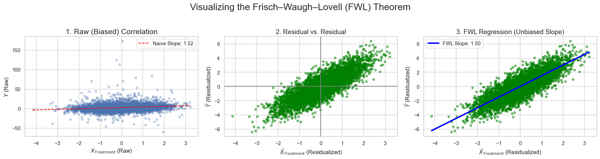

There are few results in econometrics that feel as magical as the (Yule-)Frisch–Waugh–Lovell (FWL) Theorem. In this article, we will trace how it is derived analytically and test if it holds empirically.
\[
\begin{aligned}
Y &= X_1\beta_1 + X_2\beta_2 + \varepsilon \\
&= X \beta + \varepsilon
\end{aligned}
\]
where
\(Y\): \(n \times 1\) outcome vector where \(n\) is number of examples
\(X_1\): \(n \times k_1\) treatment vector where \(k_1\) is number of features
\(X_2\): \(n \times k_2\) control vector where \(k_2\) is number of features
\(\beta_i\): \(k_i \times 1\) coefficient vector
\(\varepsilon\): \(n \times 1\) error vector
\(X\): \(n \times (k_1+k_2)\) total regressor vector
\(\beta\): \((k_1+k_2) \times 1\) total coefficient vector
The FWL theorem states that \(\hat{\beta_1}\) estimated from the full regression is exactly the same coefficient obtained from the following procedure:
Regress \(Y\) on control \(X_2\) and keep the residuals \(\tilde{Y}=M_2Y\) (outcome residualization/nuisance regression)
Regress \(X_1\) on control \(X_2\) and keep the residuals \(\tilde{X_1}=M_1 X\) (treatment residualization/nuisance regression)
Regress \(\tilde{Y}\) on \(\tilde{X_1}\). \(\beta_1\) derived from this is exactly the same as one from the full regression (final residualized regression)
Let us pause for a second and think about how preposterous it is. Monsieurs George Udny Yule, Ragnar Frisch, Frederick V. Waugh, and Michael C. Lovell are basically saying:
Hey, look. Those coefficients you thought you could only derive by regressing the outcome on the whole set of control and treatment variables? Turns out you can somehow get the exact same estimation from regressing the residuals of the outcome on those of the treatment variables.
When I first learned about this, it was nothing short of black magic.
The Projection Matrix and The Annihilator Matrix
One last preparation before we dive into the proof is understanding the projection matrix and the badass-sounding annihilator matrix. When we regress \(Y\) on \(X_2\), we derive coefficient \(\alpha_2\) as
\[
\begin{aligned}
Y &= X_2 \alpha_2 + \varepsilon_2 \\
E[X_2'(Y-X_2 \alpha_2)] &= 0 \text{ ; population moment condition} \\
X_2'(Y-X_2 \hat{\alpha_2}) &= 0 \text{ ; sample moment condition} \\
X_2'Y - X_2'X_2 \hat{\alpha_2}&= 0 \\
\hat{\alpha_2}&= (X_2'X_2)^{-1} X_2'Y \\
\hat{Y_2} &= X_2 \hat{\alpha_2} \\
&= X_2 (X_2'X_2)^{-1} X_2' Y \\
&= P_2 Y
\end{aligned}
\]
where
\(\varepsilon_2\): \(n \times 1\) error vector of the outcome nuisance regression
\(\hat{Y_2}\): \(n \times 1\) estimated values based on the outcome nuisance regression
We can think of \(P_2 = X_2 (X_2'X_2)^{-1} X_2'\) as a function that transforms actual outcome \(Y\) into the estimated outcome \(Y_2\). We call \(P_2\) the projection matrix (symmetrical \(n \times n\)), refering to the fact that it projects\(Y\) onto subspace spanned by \(X_2\). Another neat thing about \(P_2\) is that it is an idempotent matrix:
The annihilator matrix is simply \(M_2 = I - P_2\) (also symmetrical \(n \times n\) and idemptotent) and multiplying it to \(Y\) gives residuals of the outcome nuisance regression due to:
\[
\begin{aligned}
\hat{Y_2} &= P_2 Y \\
M_2 &= I - P_2 \\
M_2 Y & = (I - P_2) Y \\
&=Y - P_2 Y \\
&= Y - \hat{Y_2}
\end{aligned}
\]
Exactly the coefficient \(\hat{\beta_{r}}\) when we regress residualized \(Y\) on residualized \(X_1\).
Don’t Believe the Symbol Manipulation? Let’s Run The Code
For those of you who, like me, are skeptical of mathematical equation hocus pocus, let us test the theorem empirically. We will simulate a 500k-sample dataset with one Gaussian treatment variable X_treatment, 100 control variables (from 40 Guassian features, 30 power-law features, and a 31-class categorical feature; to make it more exciting), and a continuous outcome y. We estimate the coefficient of X_treatment using both full OLS and the FWL procedure. The FWL theorem posits that they are identical.
Shape of dataset: (500000, 100)
True β_treatment: 1.5
Full OLS β_treatment: 1.5026663267823759
Full OLS computation time: 2.343 seconds
FWL β_treatment: 1.5026663267823739
FWL computation time: 4.650 seconds
Are they numerically identical? True
A very useful implication from FWL is that we can scatter-plot the residuals of outcome and treatment to show their correlation, controlled for other variables, in a nicely scaled plot like:
Code
# Use a subset of data for cleaner visualization (e.g., first 5000 points)n_plot =5000X_treatment_plot = X_treatment[:n_plot]y_plot = y[:n_plot]X_controls_plot = X_controls[:n_plot, :]X_treatment_resid_plot = X_treatment_resid[:n_plot]y_resid_plot = y_resid[:n_plot]# Set a style for professional-looking plotssns.set_theme(style="whitegrid")fig, axes = plt.subplots(1, 3, figsize=(18, 5))fig.suptitle('Visualizing the Frisch–Waugh–Lovell (FWL) Theorem', fontsize=20)# --- Plot 1: Raw Correlation (Messy) ---# This shows the naive, biased correlation before accounting for controls.axes[0].scatter(X_treatment_plot, y_plot, alpha=0.3, s=20)axes[0].set_title('1. Raw (Biased) Correlation', fontsize=16)axes[0].set_xlabel('$X_{\\text{Treatment}}$ (Raw)')axes[0].set_ylabel('$Y$ (Raw)')# Optional: Add a naive regression line (will be biased)model_naive = sm.OLS(y_plot, sm.add_constant(X_treatment_plot)).fit()x_line = np.linspace(X_treatment_plot.min(), X_treatment_plot.max(), 100)y_line = model_naive.predict(sm.add_constant(x_line))axes[0].plot(x_line, y_line, color='red', linestyle='--', label=f'Naive Slope: {model_naive.params[1]:.2f}')axes[0].legend(frameon=True)# --- Plot 2: Control Residuals (Partialling Out) ---# This is the "residualization" step. We'll show the residuals of Y vs X_treatment# but where the effect of the controls has been removed.axes[1].scatter(X_treatment_resid_plot, y_resid_plot, alpha=0.5, s=20, color='green')axes[1].axhline(0, color='gray', linestyle='-')axes[1].axvline(0, color='gray', linestyle='-')axes[1].set_title('2. Residual vs. Residual', fontsize=14)axes[1].set_xlabel('$\\tilde{X}_{\\text{Treatment}}$ (Residualized)')axes[1].set_ylabel('$\\tilde{Y}$ (Residualized)')# --- Plot 3: The Estimated Coefficient ---# This shows the final regression line, which has the true, unbiased coefficient.axes[2].scatter(X_treatment_resid_plot, y_resid_plot, alpha=0.5, s=20, color='green')axes[2].set_title('3. FWL Regression (Unbiased Slope)', fontsize=14)axes[2].set_xlabel('$\\tilde{X}_{\\text{Treatment}}$ (Residualized)')axes[2].set_ylabel('$\\tilde{Y}$ (Residualized)')# Add the FWL regression linex_fwl_line = np.linspace(X_treatment_resid_plot.min(), X_treatment_resid_plot.max(), 100)y_fwl_line = coef_FWL * x_fwl_lineaxes[2].plot(x_fwl_line, y_fwl_line, color='blue', linewidth=3, label=f'FWL Slope: {coef_FWL:.2f}')axes[2].legend(frameon=True)plt.tight_layout(rect=[0, 0.03, 1, 0.95]) # Adjust layout to fit suptitleplt.show()

A noteworthy observation is that FWL implementation takes longer to compute even though theoretically it is doing matrix operations on a much smaller \(k_1\) features. This points towards modern Python library optimizing the matrix operations so much that most of the computation lies in the overhead of repeating the (smaller) regression 3 times. I would need to dive deeper for confirmation. Better studied readers please let me know if you can pinpoint the reason why.